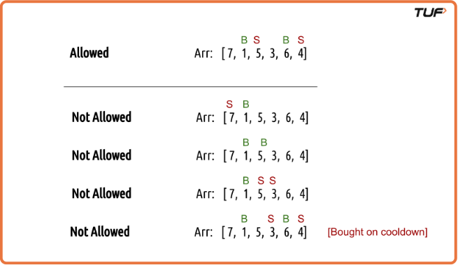
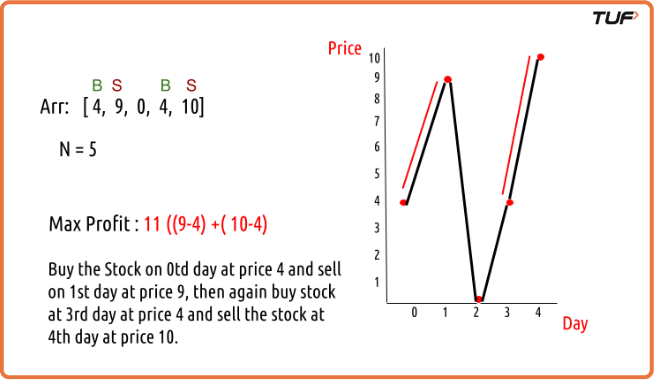
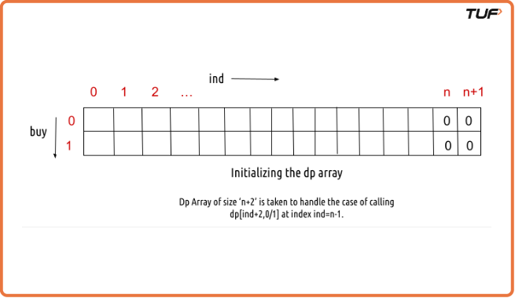
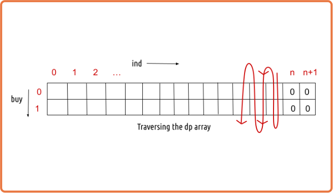
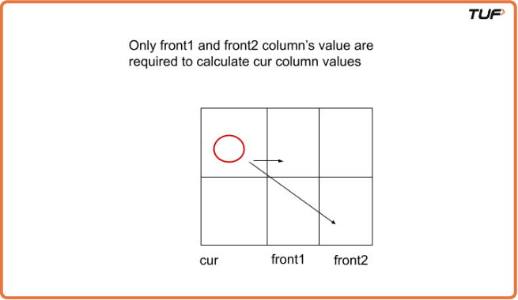

Buy and Sell Stocks With Cooldown | (DP - 39)
We are given an array Arr[] of length n. It represents the price of a stock on ‘n’ days. The following guidelines need to be followed:
- We can buy and sell the stock any number of times.
- In order to sell the stock, we need to first buy it on the same or any previous day.
- We can’t buy a stock again after buying it once. In other words, we first buy a stock and then sell it. After selling we can buy and sell again. But we can’t sell before buying and can’t buy before selling any previously bought stock.
- We can’t buy a stock on the very next day of selling it. This is the cooldown clause.

Examples
Example 1: Arr=[4,9, 0, 4, 10] N=5 Max Profit=11 ((9-4)+(10-4)) Explanation: Buy the stock on 0th day at a price of 4 and sell on the 1st day with a price of 9, then again buy stock at 3rd day at a price of 4 and sell the stock at 4th day at the price of 10

Disclaimer: Here is the practice link to help you assess your knowledge better. It's highly recommend trying to solve it before looking at the solution.
Memoization Approach
Algorithm / Intuition
Each day, we can either do nothing or make a buy/sell decision based on previous actions. Since future profits depend on today’s choice, we explore all possibilities using recursion.
Approach:
- We look at one day at a time.
- We track whether we’re allowed to buy or sell that day.
When buying is allowed:
- Option 1: Skip the day and decide again tomorrow.
- Option 2: Buy today, spend money, and move forward with a plan to sell later.
When selling is allowed:
- Option 1: Skip the day and keep holding the stock.
- Option 2: Sell today, earn money, and skip the next day due to cooldown before buying again.
Memoization:
- Store results to avoid recalculating the same case.
- Before calculating for a specific day and action, check if the answer is already saved.
- If saved, reuse it. If not, compute and store it for future use.
Code
#include <bits/stdc++.h>
using namespace std;
class Solution{
int getAns(vector<int> Arr, int ind, int buy, int n, vector<vector<int>> &dp) {
// Base case: If we've reached the end of the array, return 0 profit.
if (ind >= n) return 0;
// Check if the result is already computed
if (dp[ind][buy] != -1)
return dp[ind][buy];
int profit;
if (buy == 0) { // We can buy the stock
profit = max(0 + getAns(Arr, ind + 1, 0, n, dp), -Arr[ind] + getAns(Arr, ind + 1, 1, n, dp));
}
if (buy == 1) { // We can sell the stock
profit = max(0 + getAns(Arr, ind + 1, 1, n, dp), Arr[ind] + getAns(Arr, ind + 2, 0, n, dp));
}
// Store the result in the DP array and return
return dp[ind][buy] = profit;
}
int stockProfit(vector<int> &Arr) {
int n = Arr.size();
vector<vector<int>> dp(n, vector<int>(2, -1));
int ans = getAns(Arr, 0, 0, n, dp);
return ans;
}
int main() {
vector<int> prices {4, 9, 0, 4, 10};
cout << "The maximum profit that can be generated is " << stockProfit(prices) << endl;
return 0;
}Complexity Analysis
Time Complexity: O(N*2). There are N*2 states therefore at max ‘N*2’ new problems will be solved and we are running a for loop for ‘N’ times to calculate the total sum.
Space Complexity: O(N*2) + O(N). We are using a recursion stack space(O(N)) and a 2D array O(N*2).
Tabulation Approach
Algorithm
To convert the memoization approach into tabulation, we create a 2D array just like before. This time, instead of recursion, we fill the array from the end toward the start.
- Create a 2D array with rows equal to the number of days + 1, and two columns for the buy/sell state.
- Initialize the last row with 0s since there’s no profit after all days are done.

- Use two nested loops:
- The outer loop goes backward from the last day to the first.
- The inner loop switches between the buy and sell states.

- In each loop step, calculate values using the same logic from memoization.
- Final answer is stored at the start of the array, representing the first day with the right to buy.
Code
#include <bits/stdc++.h>
using namespace std;
class Solution{
int stockProfit(vector<int> &Arr) {
int n = Arr.size();
// Create a 2D DP array with dimensions (n+2) x 2, initialized to 0
vector<vector<int>> dp(n + 2, vector<int>(2, 0));
// Loop through the stock prices from the end to the beginning
for (int ind = n - 1; ind >= 0; ind--) {
for (int buy = 0; buy <= 1; buy++) {
int profit;
if (buy == 0) { // We can buy the stock
profit = max(0 + dp[ind + 1][0], -Arr[ind] + dp[ind + 1][1]);
}
if (buy == 1) { // We can sell the stock
profit = max(0 + dp[ind + 1][1], Arr[ind] + dp[ind + 2][0]);
}
// Store the computed profit in the DP array
dp[ind][buy] = profit;
}
}
return dp[0][0];
}
int main() {
vector<int> prices {4, 9, 0, 4, 10};
cout << "The maximum profit that can be generated is " << stockProfit(prices) << endl;
return 0;
}Complexity Analysis
Time Complexity: O(N*2). There are two nested loops that account for O(N*2) complexity.
Space Complexity: O(N*2). We are using an external array of size ‘N*2’. Stack Space is eliminated.
Space Optimization Approach
Algorithm
When we look carefully at the pattern, we find that to make a decision for today, we only need the results of the next one or two days.
This means we don’t need to remember all the past results just the most recent two outcomes. So, instead of keeping a big table, we can reduce it to only a few values.

- We start by assuming that after the final day, no more profit can be made.
- Then we go backward, one day at a time, deciding what action would give the best result based on the next few days.
- For each step, we only keep the results from the two upcoming days and use them to calculate the best choice for today.
- Once today’s decision is done, we shift the stored values to prepare for the next step.
- At the end, the answer lies in the final calculated value.
Code
#include <bits/stdc++.h>
using namespace std;
class Solution{
int stockProfit(vector<int> &Arr) {
int n = Arr.size();
// Initialize three arrays to track the maximum profit for buying and selling
vector<int> cur(2, 0); // Current maximum profit
vector<int> front1(2, 0); // Maximum profit one step ahead
vector<int> front2(2, 0); // Maximum profit two steps ahead
for (int ind = n - 1; ind >= 0; ind--) {
for (int buy = 0; buy <= 1; buy++) {
int profit;
if (buy == 0) { // We can buy the stock
profit = max(0 + front1[0], -Arr[ind] + front1[1]);
}
if (buy == 1) { // We can sell the stock
profit = max(0 + front1[1], Arr[ind] + front2[0]);
}
cur[buy] = profit;
}
// Update the 'front1' and 'front2' arrays with current values
front2 = front1;
front1 = cur;
}
return cur[0]; // Return the maximum profit for buying.
}
int main() {
vector<int> prices {4, 9, 0, 4, 10};
cout << "The maximum profit that can be generated is " << stockProfit(prices) << endl;
return 0;
}Complexity Analysis
Time Complexity: O(N*2). There are two nested loops that account for O(N*2) complexity
Space Complexity: O(1). We are using three external arrays of size ‘2’.